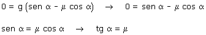

| Inclinación y coeficiente de rozamiento La aceleración con la que baja un bloque por un plano inclinado de ángulo α viene dada por: a = g·(sen α - μ cos α) Si el bloque se mueve la aceleración es positiva y si está quieto la aceleración es negativa, así que la transición entre moverse o estar quieto corresponderá al caso en que la aceleración sea cero:  Un bloque colocado sobre un plano inclinado comenzará a desli-zar cuando tg α sea un pelin mayor que μ |